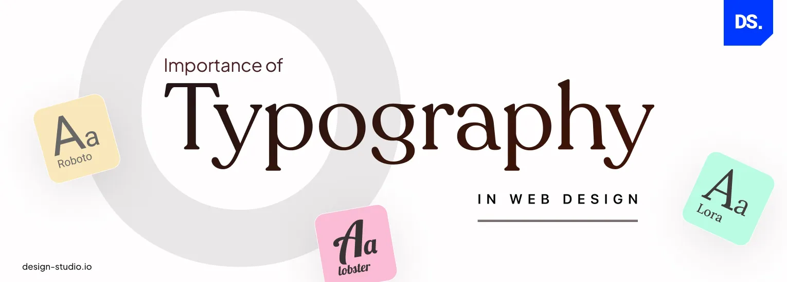
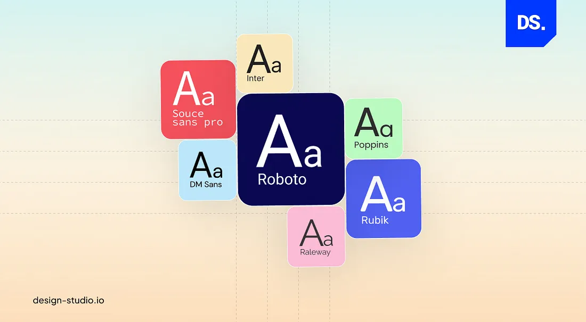
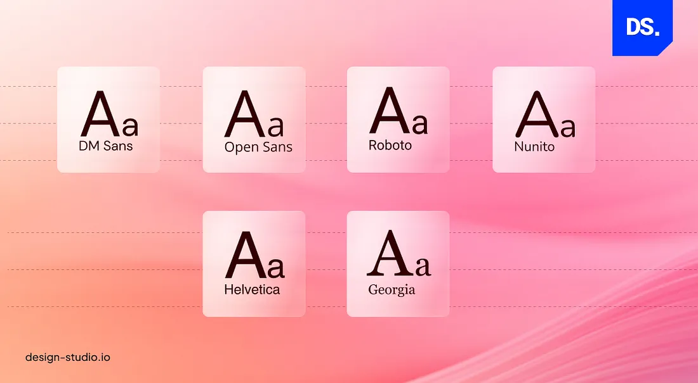
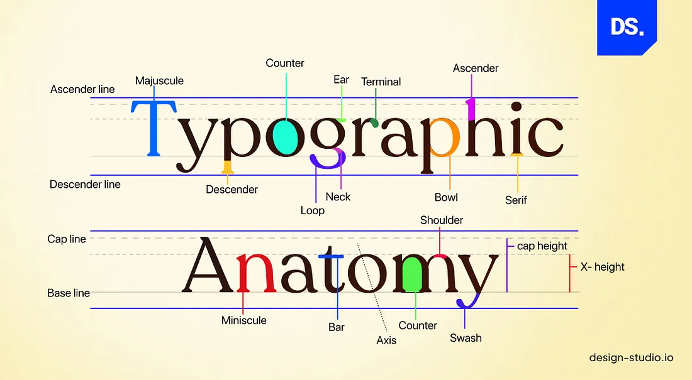
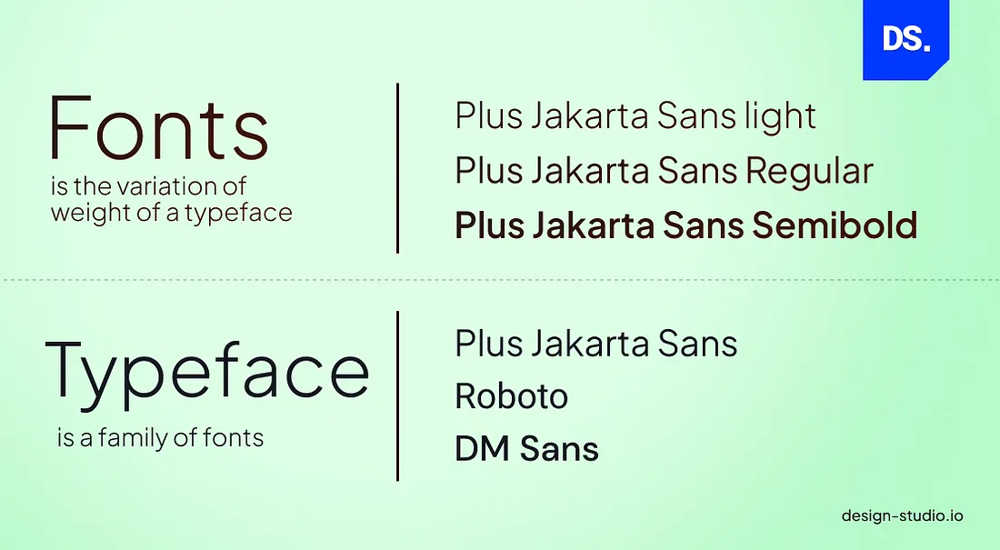
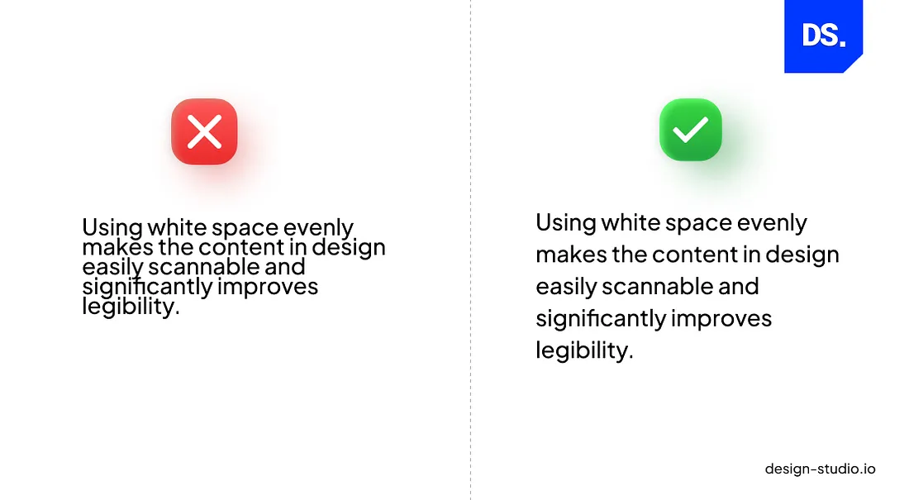
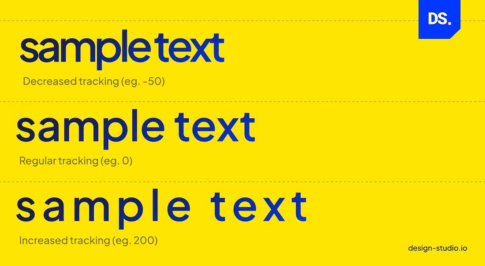
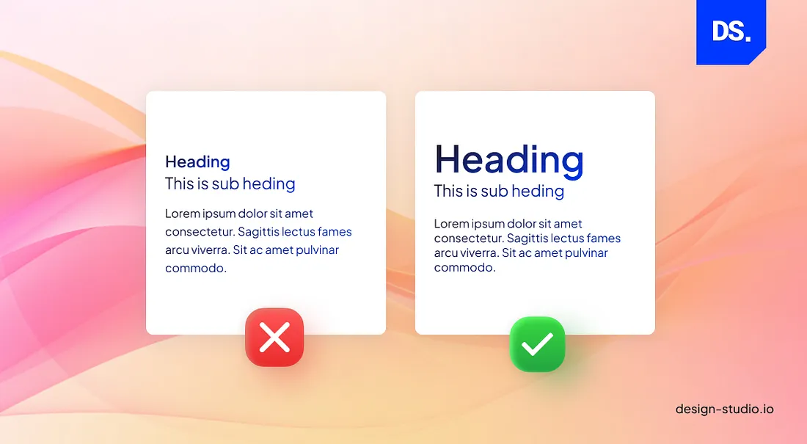

Importance of Typography in Web Design
Typography is one of the core principles of good website design. It refers to the arrangement, style, and size of text on a website. But typography is not just design with letters or arranging typefaces and fonts in unique ways. It is a practice that syndicates art, skill, and craftsmanship to make all copy on a website clear, readable, legible, and scannable for users. Good typography needs three things:
- Art in the aesthetic aspect
- Skill in producing effective communication
- Craftsmanship in execution
Combining the three is the key to making website content more engaging and easier to navigate. Strategic typography is even used to add specific branding styles to content.
- If we show you a piece of text written in a sleek and minimalistic font, you will immediately relate it to a technology brand.
- If we show you the same text written in a playful font, you will immediately relate it to a children’s brand.
This is just one example of why most mobile app design trends and UI UX trends evolve or fade away with time, but, the importance of high-quality typography in web design never diminishes.
Typography will always be one of the core principles of good website design because professional providers of web and UI UX design services know the negative effects of poor typography. Poor typography can make a website hard to navigate and its content frustrating to read. Whereas good typography can make website visitors feel happy.
- Several years ago, a famous MIT study confirmed that visually appealing fonts make humans feel happy whereas visually unappealing fonts make us feel sad.
- In 2022, a similar study was performed to understand how typography impacts user engagement on social media platforms. According to the study, image posts that featured visually appealing typographic elements had higher engagement rates.
Decades of similar studies have directed the way all leading providers of web and UI UX design services operate. They meticulously plan out every aspect of their websites’ typography. From the choice of font to the size of the letters to the softness or roughness of the shapes in the type-font: every little detail matters for professional web designers.
Do not forget the number of lines/spaces in between each paragraph and the colors of the letters in relation to their background as well! In web typography, all of these subtle details matter because they can all be manipulated to evoke unique emotions from readers.
In this article, we will assess how these subtle typography details impact modern-day web design. Before that, let us explore the overarching purpose of typography in web design.
The Purpose of Typography in Web Design
“What’s the use of being legible, when nothing inspires you to take notice of it?”
Many people will rightly argue that the main purpose of typography is to clearly convey information. In fact, Emil Ruder, the pioneer of the famous “Swiss Style” in professional typography claimed that typography has only one duty which is to “convey information in writing.” But, he said this back in the 1950s. Does this claim hold true when it comes to typography in modern-day web design?
To answer this question, let us assess how the role of typography has changed from the print media days to modern times from the POV of a reader:
- In a typical printed book or newspaper, the experience of the reader is mostly controlled. All text is linear, presented in distinguishable blocks, and is revealed page-by-page. Some books, newspapers, and magazines may have footnotes, endnotes, or creative distributions of text.
- But in most cases, the reading structure and the way readers engage with the text they find in print media are very consistent.
- That is why books and newspapers are so easy to skim through. Readers may choose not to read some sections of the content. But, the content is always available to them on the same level.
- The structure of a website reading experience is completely different. Unlike with books or magazines, the reading experience on websites is divergent, not linear.
- The average visitor on a website has many options to instantly end the reading experience and switch to another site. This is not the same as a reader consciously choosing not to read certain sections of the book.
- Unlike book readers, website visitors can get distracted. Even worse, certain types of typography can instantly turn them off. When you are reading a book, you can expect a specific type of reading experience from the start.
- On a website, the reading experience in one section may be awesome but awful in another. And whenever things get ‘awful,’ visitors log off without any hesitance.
Hence, in web design, the main purpose of typography is not to convey information. It is to get the visitor to engage with the content. It is to signal to the visitors that there is content worthy of reading on the page. It is to make them think good things about a brand just on the basis of how well the content on the website is presented.
This takes us back to the quote from Wolfgang Weingart that we mentioned at the start of this section. He was the father of New Wave typography and his work is hugely influential in modern-day web design. He, and several other web designers clarified these renewed purposes of typography in modern-day web design.
Now that we know that typography in web design has a particular purpose, we can only assume that there is a ‘right’ kind of typographic method that can help us achieve this purpose, right? Absolutely! Here are the key elements of typography in web design that web designers should focus on to get things ‘right’.
How to Apply Principles of Good Website Design to Individual Typography Elements
There are several elements of typography that web designers need to take into account during the design process. From typefaces and fonts to whitespaces, color, and contrast, here are the main typography elements that web designers need to focus on:
Fonts and Typefaces
A font is a graphical representation of alphabetic and numeric characters. Different fonts have different sizes, weights, slopes, and widths. A typeface is a specific design style applied to a family or group of alphabetic and numeric characters. Here is an image that clarifies the difference between fonts and typefaces:
Get the difference? In web design, good typography practices related to fonts and typefaces include:
- Keeping the number of typefaces on a website low (no more than two different typefaces) to maintain visual consistency.
- Using web-safe fonts (popular fonts that are already used in most users’ devices) only.
- Using standard fonts for body text.
- Ensuring that all the different types of font on the page complement each other based on their character weight and width.
- Setting the line height and limiting line length.
Now, here are some examples of bad typographical use of fonts and typefaces in web design:
- Using too many fonts and making the website look unstructured.
- Using fonts that are too small/big and making the content difficult to read.
- Using difficult-to-read fonts and making the content appear confusing.
- Using inconsistent typefaces and making the website look unprofessional.
By observing these basic font and typeface practices, web designers can positively impact the user experience.
White Space
Whitespace is the blank, empty space that surrounds and encapsulates all the design elements (text, images, etc.). Here is a visual representation of the ‘right’ and ‘wrong’ use of this typography element in web design:
When web designers adjust the content margins and space out the lines of text, the text automatically becomes easier to scan through. Whitespace is a key typography element and an efficient design tool for improving a web page’s overall readability.
Tracking
Tracking, also known as letter spacing, is the process of ensuring all characters that form word and text blocks on the page are spaced out uniformly. Tracking directly impacts the visual density of a webpage. Here is a visual example:
Increasing tracking increases the amount of whitespace in between letters/words, creating a spacious effect. Decreasing the tracking makes the content appear dense. Web designers must take a balanced approach to tracking and apply appropriate spacing between all letters to make the text easier to read.
Contrast
When web designers want to create a distinction between different typography elements (e.g., text and whitespace) they use contrast. Effective use of this typography element helps web designers highlight important messages on the website and improve the overall readability of the content.
Kerning
Similar to tracking or letter spacing, kerning is another way of organizing alphabetic and numeric characters in web design. Kerning refers to the space in-between two different characters. Web designers use this typographic element to make the spacing between two particular letters appear more natural.
Hierarchy
Before designing anything, web designers set a fixed typographic hierarchy. This hierarchy then directs the use of other typographic elements (fonts, typefaces, etc.) in the design. Establishing a typographic hierarchy helps designers automatically divide the website content into multiple sections:
- Headings for the chief topics [H1, H2]
- Subheadings for the sub-topics [H3, H4, H5]
- Body copy for the descriptions
- Captions
- Other typographic elements
Here is an example of typographic hierarchy done right and wrong:
You can see the text on the right has a fixed typographic hierarchy and is easier to understand. The hierarchy also makes the webpage easy to scan through. Users also know what types of text arrangements to expect as they navigate through the site.
Alignment
Alignment in typography refers to the concept of setting adequate spaces and distances between all design elements (text and graphics). Savvy web designers use margins and borders to align the logos, headers, text blocks, etc., on their websites. Such effective use of alignment makes the content appear clean and readable.
Color
All typography elements need to be in colors that fit the website’s background and the overall brand aesthetic. A good web designer will always balance the color and saturation of the typography elements to give their website a clean look.
Consistency
A lack of consistency in typography can confuse or overwhelm website users. To achieve typographic consistency, web designers must apply all the principles of good website design discussed above to each typography element in their design. In other words, their use of typefaces, font styles, and other typography elements should be consistent across the design.
This also includes:
- Using a limited number of fonts
- Using the same font styles for similar elements
- Using consistent font sizes/weights
- Using consistent line heights and character spacing
The Undeniable Importance of Typography in Web Design

Now that you know how the different elements of typography impact how a website design is perceived by users, let us go through the overarching benefits of integrating efficient typography practices into your web design strategies:
Vital for Making Website Content Legible
The main function of typography in web design is to make all the content on the website appear interesting. Once interest is sparked, the right choice of font, typeface, color, and other typography elements can make the content on the website legible to users. After these two feats are achieved, engaging users and convincing them to browse for longer periods on the site becomes much easier.
Vital for Building Brand Identity
Effective typography can help web designers create and reflect a strong brand identity for their websites. Designers can thoughtfully select fonts and typefaces that unequivocally reflect the brand value. They can alter the design hierarchy to produce a harmonious visual experience on the site.
They can further reinforce the brand message by maintaining typographic consistency across the design. In other words, typography is an underrated brand-building tool that can help businesses create memorable impressions of their brands.
Vital for Accessibility
Good typography is also essential and critical for boosting a website’s accessibility. Choosing easy-to-read fonts, effective use of whitespace, and other typography tricks can make any website ten times more accessible to all types of users.
Final Take
Typography has always been an essential element of graphic design and it will always be one of the core principles of good website design. That is because without good typography no piece of content is readable or visually appealing. So, if you want your web design to be engaging for users, improving its typography should be your priority!